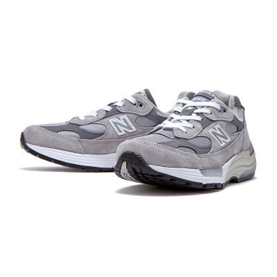

뉴발란스 992 2006년에 처음 출시된 992는 애플의 설립자인 스티브 잡스가 신어 전 세계적으로 '스티브 잡스 운동화'라는 애칭으로 널리 알려져 있습니다 
발매 이 후 처음으로 복각되어 출시되며 뉴발란스만의 클래식한 디자인, 높고 볼드한 미드솔이 특징입니다 72가지의 조각을 80가지의 공정을 거쳐 연간 한정 수량만 생산되는 뉴발란스만의 장인정신이 담긴 신발입니다 99X 시리즈 최초로 다양한 크기의 폭(width) 사이즈도 선택할 수 있도록 출시된 스토리를 가지고 있습니다 프리미엄 소재와 젤 타입의 쿠션 소재인 애브조브SBS(ABZORB SBS) 시스템을 사용해 더욱 강화된 쿠셔닝과 편안함까지 갖춘 신발입니다